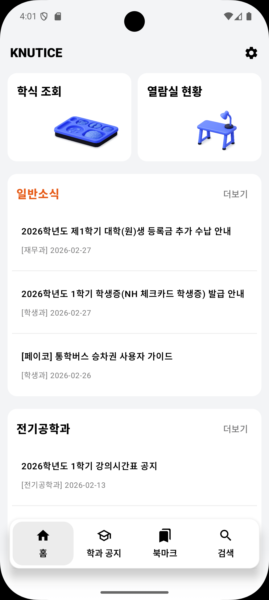
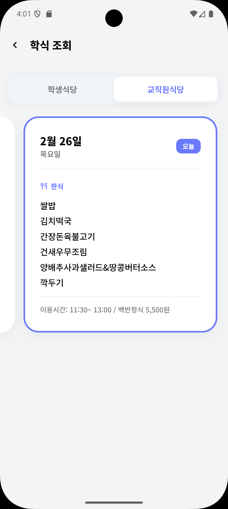

학식부터 열람실 자리 확인, 위젯까지.
업데이트된 KNUTICE를 소개할게요.
공지사항 확인은 기본, 이제 홈 화면에서 대시보드 형태로 학식 메뉴와 열람실 현황까지 바로 접근할 수 있어요.

식당 앞까지 갈 필요 없어요. 학생식당부터 교직원식당 메뉴까지 터치 한 번으로 편하게 확인해 보세요.

집중 학습 ZONE부터 협업 ZONE까지! 전체 좌석 점유율과 남은 자리 위치를 앱에서 직관적으로 미리 볼 수 있어요.
매일 올라오는 학식 메뉴 알림은 물론, 내가 찜해둔 열람실 자리가 반납되면 바로 푸시 알림으로 알려드릴게요.
위젯 기능이 추가되었어요. 내가 가장 관심 있는 카테고리를 설정하고, 최신 공지 3개를 홈 화면에서 바로 확인하세요.
특히 이번에 입학하신 26학번 신입생 여러분, 진심으로 환영해요! 🎒✨
처음이라 낯설고 헷갈리는 공지사항들, 새롭게 단장한 KNUTICE가 훨씬 편하게 챙겨드릴게요. 성공적인 첫 학기를 기원합니다!